MahApp.Metro を使ってWPFアプリをモダンなウィンドウデザインにしてみます。
1. MahApps.Metro を使ってウィンドウを作成してみる
2. (Left-/Right-) WindowCommands
3. ウィンドウの縁を指定
4. その他のウィンドウ属性
4.1. ウィンドウの位置、サイズ、を自動保存 (SaveWindowPosition)
4.2. ウィンドウを表示するときスライドするのをオフにする (WindowTransitionEnabled)
4.3. ウィンドウタイトルを大文字にする (TitleCaps)
参考URL
関連ページ
MahApp.Metro の「quick-start」に従って、まずはウィンドウを作成するところから始めてみましょう。
[環境]
Visual Studio で作成したデフォルトのWPFアプリケーションは以下の通りです。
ここからスタートで改造していきます。
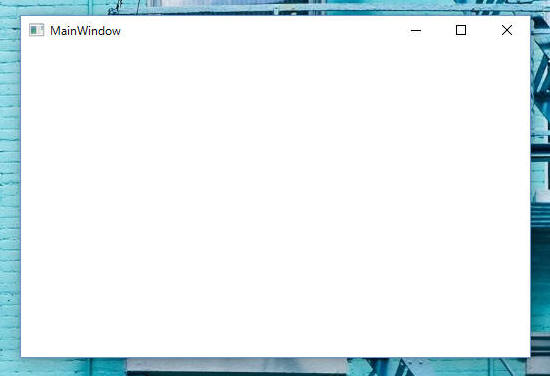
手順を以下に記載します。
ソリューションエクスプローラーでソリューションを右クリックし、「ソリューションのNuGetパッケージの管理」を選択します。パッケージマネージャーが開くので、左上のパッケージソースが「nuget.org」になっていることを確認し、検索ボックスに「MahApps.Metro」と入力して「Enter」キーを押します。MahApps.Metroを選択して「インストール」ボタンを押してアプリに組み込みます。
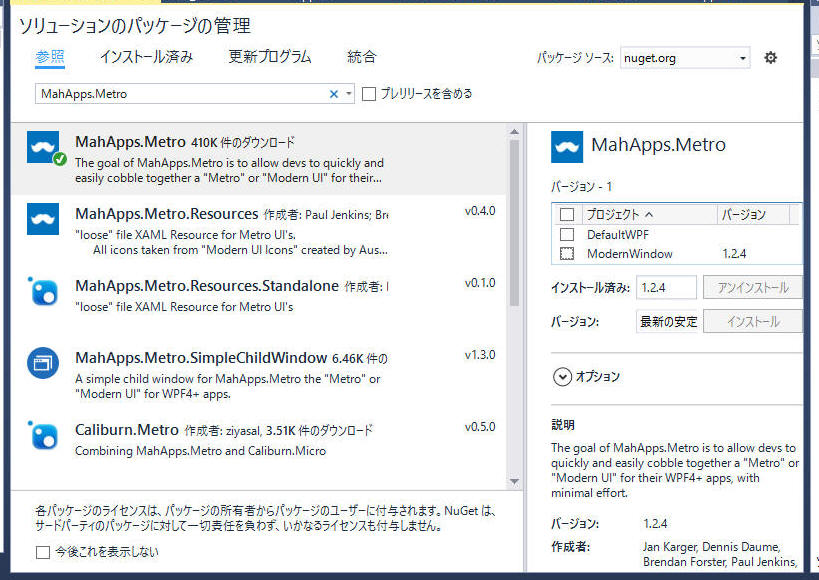
以下、上記の変更を行うために行ったソース修正です。
[プログラムソース "MainWindow.xaml"]
<Controls:MetroWindow x:Class="ModernWindow.MainWindow" xmlns="http://schemas.microsoft.com/winfx/2006/xaml/presentation" xmlns:x="http://schemas.microsoft.com/winfx/2006/xaml" xmlns:d="http://schemas.microsoft.com/expression/blend/2008" xmlns:mc="http://schemas.openxmlformats.org/markup-compatibility/2006" xmlns:Controls="http://metro.mahapps.com/winfx/xaml/controls" xmlns:local="clr-namespace:ModernWindow" mc:Ignorable="d" Title="MainWindow" Height="350" Width="525"> <Grid> </Grid> </Controls:MetroWindow> |
[プログラムソース "MainWindow.xaml.cs"]
using System; using System.Collections.Generic; using System.Linq; using System.Text; using System.Threading.Tasks; using System.Windows; using System.Windows.Controls; using System.Windows.Data; using System.Windows.Documents; using System.Windows.Input; using System.Windows.Media; using System.Windows.Media.Imaging; using System.Windows.Navigation; using System.Windows.Shapes; using MahApps.Metro.Controls; namespace ModernWindow { /// <summary> /// MainWindow.xaml の相互作用ロジック /// </summary> public partial class MainWindow : MetroWindow { public MainWindow() { InitializeComponent(); } } } |
ここまでのプログラム修正で下図のような画面を表示するようになります。
「quick-start」とちょっと違うみたいですが、まぁいったん良しとしましょう。
続いて「App.xaml」に <ResourceDictionary> を追加します。
以下の通り。
<Application x:Class="ModernWindow.App"
xmlns="http://schemas.microsoft.com/winfx/2006/xaml/presentation"
xmlns:x="http://schemas.microsoft.com/winfx/2006/xaml"
xmlns:local="clr-namespace:ModernWindow"
StartupUri="MainWindow.xaml">
<Application.Resources>
<ResourceDictionary>
<ResourceDictionary.MergedDictionaries>
<!-- MahApps.Metro resource dictionaries. Make sure that all file names are Case Sensitive! -->
<ResourceDictionary Source="pack://application:,,,/MahApps.Metro;component/Styles/Controls.xaml" />
<ResourceDictionary Source="pack://application:,,,/MahApps.Metro;component/Styles/Fonts.xaml" />
<ResourceDictionary Source="pack://application:,,,/MahApps.Metro;component/Styles/Colors.xaml" />
<!-- Accent and AppTheme setting -->
<ResourceDictionary Source="pack://application:,,,/MahApps.Metro;component/Styles/Accents/Blue.xaml" />
<ResourceDictionary Source="pack://application:,,,/MahApps.Metro;component/Styles/Accents/BaseLight.xaml" />
</ResourceDictionary.MergedDictionaries>
</ResourceDictionary>
</Application.Resources>
</Application>
|
以上の結果、下図の画面になります。
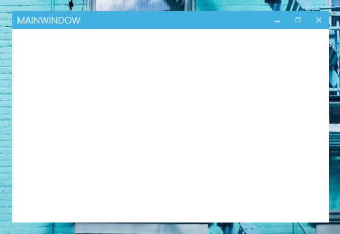
アプリにアイコンを追加します。
アイコンは何を使っても良いのですが、「quick-start」と同じにすることにこだわって MahApp.Metro のデモアプリに使用しているアイコンをプロジェクトに追加します。
アイコン
”mahapps.metro.logo2.ico” をMahApps.Metroのプロジェクトからコピーし、作成中のプロジェクト中のフォルダ Resources
中に保存します。
| 参考： スタティック アイコン の代わりに 最小化/最大化/閉じる のアイコンは、スタティックアイコンではなく"Marlett"と呼ばれるフォントを使っています。詳しくは the Wikipedia article を参照。 |
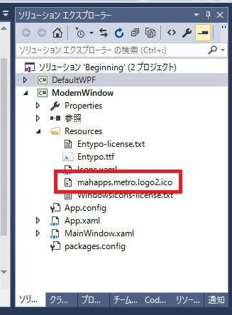
そしてVSまたはBlend上のGUIからアイコンを設定する、もしくはXAMLを直接修正してアイコンを設定します。
[プログラムソース "MainWindow.xaml"]
<Controls:MetroWindow x:Class="ModernWindow.MainWindow"
xmlns="http://schemas.microsoft.com/winfx/2006/xaml/presentation"
xmlns:x="http://schemas.microsoft.com/winfx/2006/xaml"
xmlns:d="http://schemas.microsoft.com/expression/blend/2008"
xmlns:mc="http://schemas.openxmlformats.org/markup-compatibility/2006"
xmlns:Controls="http://metro.mahapps.com/winfx/xaml/controls"
xmlns:local="clr-namespace:ModernWindow"
mc:Ignorable="d"
Title="MainWindow" Height="350" Width="525"
Icon="Resources/mahapps.metro.logo2.ico">
<Grid>
</Grid>
</Controls:MetroWindow>
|
以上によりこんな感じになりました。
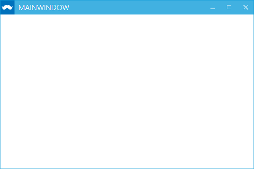
ShowTitleBar="True|False"
”False” に設定したら下図のようにタイトルバーが無くなりました。
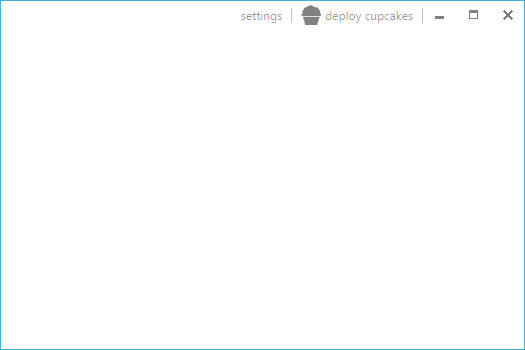
"Resize Grip" が無くとも MetroWindow をリサイズする方法はあります。"Resize Grip"
が無くてもウィンドウの全ての縁と角をつかんでリサイズすることができます。
しかしながら
MetroWindowがリサイズ可能であることを示すことができないので、このウィンドウがリサイズ可能であることをユーザーへ示すのに "Resize Grip"
は有効な方法です。
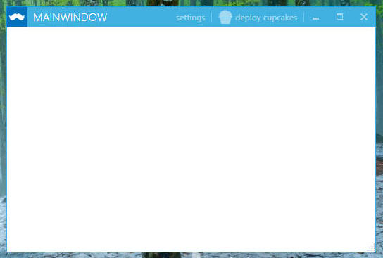
ShowIconOnTitleBar="True|False"
”False”に設定したら下図のようになりました。
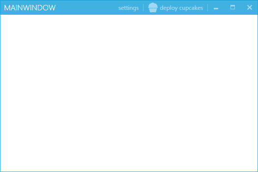
"WindowButtonCommands" は 最大化/最小化/閉じる、の3つのボタンを持ちます。あなたはこれらのボタンを隠すことができます。
同様に、最大化/最小化、のVisibilityを ResizeMode プロパティの設定により変更できます。
MahApp.Metro ウィンドウの特徴の一つである "LeftWindowsCommand" または "RightWindowsCommands" は
ウィンドのタイトルバーに独自のボタンなどを追加することができる機能です。
「quick-start」に従ってこれを実装してみます。
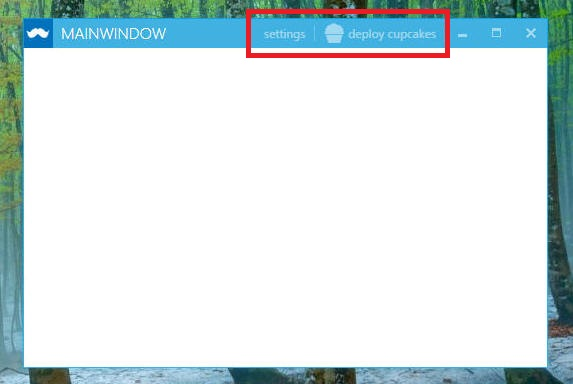
"RightWindowCommands" として２つのボタンを追加します。
<Controls:MetroWindow x:Class="ModernWindow.MainWindow"
xmlns="http://schemas.microsoft.com/winfx/2006/xaml/presentation"
xmlns:x="http://schemas.microsoft.com/winfx/2006/xaml"
xmlns:d="http://schemas.microsoft.com/expression/blend/2008"
xmlns:mc="http://schemas.openxmlformats.org/markup-compatibility/2006"
xmlns:Controls="http://metro.mahapps.com/winfx/xaml/controls"
xmlns:local="clr-namespace:ModernWindow"
mc:Ignorable="d"
BorderThickness="1"
BorderBrush="{DynamicResource AccentColorBrush}"
ShowTitleBar="True"
ShowIconOnTitleBar="False"
Title="MainWindow" Height="350" Width="525"
Icon="Resources/mahapps.metro.logo2.ico">
<Window.Resources>
<ResourceDictionary>
<ResourceDictionary.MergedDictionaries>
<ResourceDictionary Source="/Resources/icons.xaml"/>
</ResourceDictionary.MergedDictionaries>
</ResourceDictionary>
</Window.Resources>
<Controls:MetroWindow.RightWindowCommands>
<Controls:WindowCommands>
<Button Content="settings" Click="Button_Click" />
<Button>
<StackPanel Orientation="Horizontal">
<Rectangle Width="20" Height="20"
Fill="{Binding RelativeSource={RelativeSource AncestorType=Button}, Path=Foreground}">
<Rectangle.OpacityMask>
<VisualBrush Stretch="Fill" Visual="{StaticResource appbar_cupcake}" />
</Rectangle.OpacityMask>
</Rectangle>
<TextBlock Margin="4 0 0 0"
VerticalAlignment="Center"
Text="deploy cupcakes" />
</StackPanel>
</Button>
</Controls:WindowCommands>
</Controls:MetroWindow.RightWindowCommands>
<Grid>
</Grid>
</Controls:MetroWindow>
|
上記のソースのままでは 「Visual = "{StaticResource appbar_cupcake}"」 の部分でエラーになります。
"appbar_cupcake" のアイコン情報が無いためのエラーです。これは”MahApps.Metro.Resources”に含まれるXAMLアイコンです。
NuGet で MahApp.Metro.Resource を追加します。
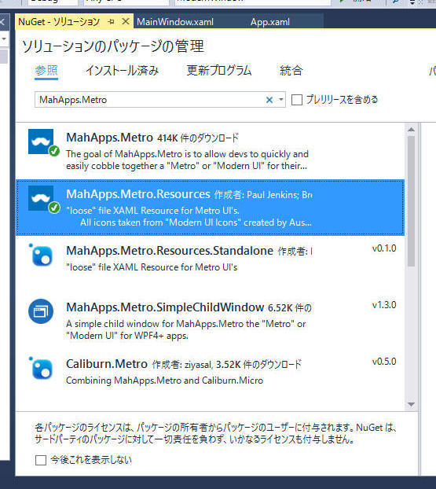
ソリューションエクスプローラーで確認すると、以下の４つのファイルが追加されます。
- Entrypo-license.txt
-
Entypo.ttf
- Icons.xaml
- WindowsIcons-license.txt
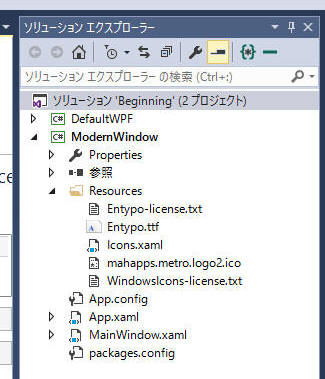
"Icons.xaml" のプロパティを確認します。デフォルトのままで修正不要のはずですが、以下の通りです。
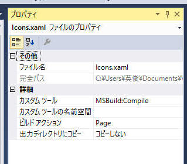
ここまで修正した段階でコンパイルして実行すると、以下ようなウィンドウを表示できるようになります。
（ボタンを実装しただけでアクションの実装をしていないので、ボタンを押しても何も起こりません。）
"LeftWindowCommands" を加えます。
ボタンの内容は”RightWindowCommands”と同じものを適用します。
<Controls:MetroWindow.RightWindowCommands>
<Controls:WindowCommands>
<Button Content="settings" />
<Button>
<StackPanel Orientation="Horizontal">
<Rectangle Width="20" Height="20"
Fill="{Binding RelativeSource={RelativeSource AncestorType=Button}, Path=Foreground}">
<Rectangle.OpacityMask>
<VisualBrush Stretch="Fill" Visual="{StaticResource appbar_cupcake}" />
</Rectangle.OpacityMask>
</Rectangle>
<TextBlock Margin="4 0 0 0" VerticalAlignment="Center" Text="deploy cupcakes" />
</StackPanel>
</Button>
</Controls:WindowCommands>
</Controls:MetroWindow.RightWindowCommands>
<Controls:MetroWindow.LeftWindowCommands>
<Controls:WindowCommands>
<Button Content="settings" />
<Button>
<StackPanel Orientation="Horizontal">
<Rectangle Width="20" Height="20"
Fill="{Binding RelativeSource={RelativeSource AncestorType=Button}, Path=Foreground}">
<Rectangle.OpacityMask>
<VisualBrush Stretch="Fill" Visual="{StaticResource appbar_cupcake}" />
</Rectangle.OpacityMask>
</Rectangle>
<TextBlock Margin="4 0 0 0" VerticalAlignment="Center" Text="deploy cupcakes" />
</StackPanel>
</Button>
</Controls:WindowCommands>
</Controls:MetroWindow.LeftWindowCommands>
|
ウィンドウタイトル ”MAINWINDOW” の左側にボタンが追加されました。
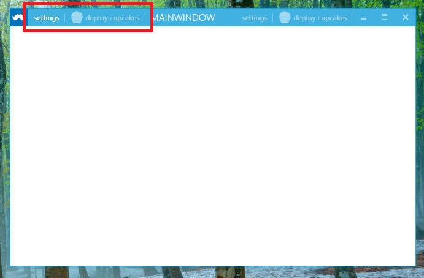
ウィンドウの縁の表現を指定します。
デフォルト状態では BorderThickness="0" で、GlowBrushの指定もされて無いようです。
以下のどれかを指定しておかないと、ウィンドウ背景によってはウィンドウが埋もれてしまう恐れがありそうです。
何かの指定はしましょう。
BorderBrush="{DynamicResource AccentColorBrush}"
BorderThickness="1"
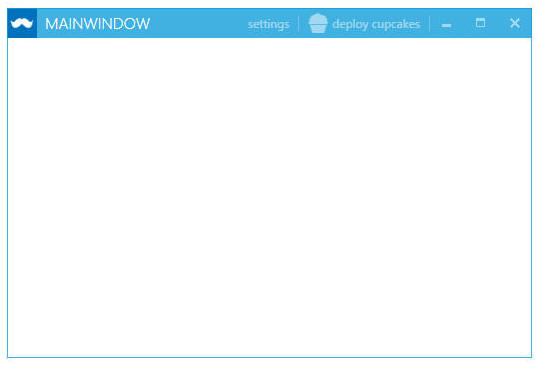
GlowBrush="{DynamicResource AccentColorBrush}"
BorderThickness="1"
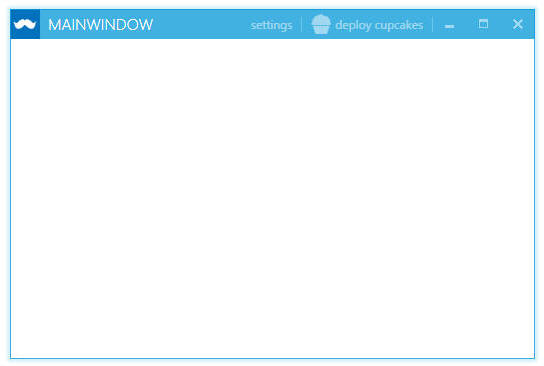
EnableDWMDropShadow="True"
GlowBrush="Black"
BorderThickness="0"
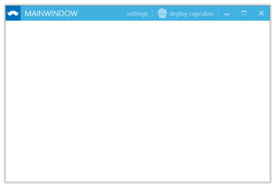
次に起動したときにウィンドウ位置とサイズを復帰する。
SaveWindowPosition="True"
デフォルトは True
WindowTransitionsEnabled = "False"
ウィンドウタイトルを大文字表記にします。
デフォルトは True。
TitleCaps = "True" or "False"
記載： 木下英俊
2016/11/24 誤植修正： (正)WindowTransitionsEnabled ← (誤)WindowTransitionsEnable
2016/03/13 新規作成